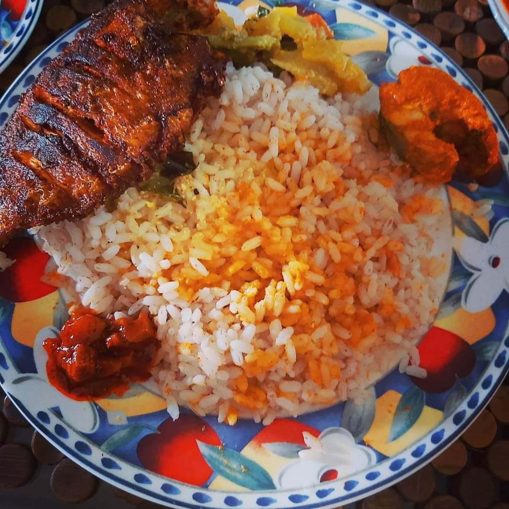

രാവിലെ കിഴങ്ങു കറിയിൽ എത്ര സ്പൂൺ മസാല ഇടണമെന്ന് ചോദിക്കാൻ വിളിച്ചതാണ് അമ്മയെ... Smell കിട്ടാത്ത കൊണ്ടും ആലുവേം ഉലുവേം തിരിച്ചറിയാത്ത ടൈപ്പ് ആയോണ്ടും മഞ്ഞ ഡെപ്പീൽ ഉള്ളത് മസാല അല്ല മല്ലിപ്പൊടി തന്നെയാണെന്ന് ചോദിച്ച് ഉറപ്പുവരുത്തി.
അമ്മ അമ്മയുടെ അമ്മയുടെ കൂടെ ആലപ്പുഴയിൽ കോവിഡ് ട്രീറ്റ്മെന്റ് സെന്ററിലാണ്, ഞാൻ വീട്ടിലും.
അവിടെ രാവിലെ അപ്പവും ബീഫും, ഉച്ചക്ക് ചോറും ചിക്കനും, രാത്രി ചപ്പാത്തിയും മുട്ടക്കറിയും ഒക്കെയാണെന്നാണ് പറഞ്ഞത്.
ഇവിടെയാണേൽ പനി തുടങ്ങിയ അന്നു മുതൽ രാവിലെ പുട്ടും ഉച്ചക്കും രാത്രിയും കഞ്ഞിയും ആണ്. രുചി മനസ്സിലാവാത്തതുകൊണ്ടും ഉണ്ടാക്കാൻ അറിയാത്തതുകൊണ്ടും കറിയൊന്നും ഒരു വിഷയമേ ആയിരുന്നില്ല.
കഞ്ഞിയിൽ നിന്ന് ചോറിലേക്ക് പ്രൊമോഷൻ കിട്ടിയ സമയത്ത് പെങ്ങൾ ഉണ്ടാക്കി കൊടുത്തിവിട്ട മീൻ കറിയും വറുത്തതും ഒക്കെ കഴിക്കുമ്പോളാണ് ഇത്രേം നാളും ടേസ്റ്റ് കിട്ടാഞ്ഞതല്ല, ഉണ്ടാക്കിയതിന്റെ കുഴപ്പം കൂടി ആണെന്ന് മനസ്സിലാവുന്നത്. 🤭
കഴിഞ്ഞ ദിവസം ചൂണ്ടയിട്ടു കിട്ടിയ കരിമീനുകൾ ഒക്കെ അടുപ്പിലെ അറുബോറൻ ചാറിൽ കിടന്നു നീറിയത്തിന്റെ ദേഷ്യമത്രയും വയറിനുള്ളിൽ കിടന്നു തെറിവിളിച്ചു തീർക്കുന്നുണ്ടാവണം. 😟
മണം കിട്ടുന്നുണ്ടോ എന്നറിയാൻ പുറത്തിറങ്ങി നാലു വീതം മൂന്നു നേരം പൊട്ടിച്ചെടുത്ത് തിരുമ്മി മണപ്പിച്ചു നോക്കുന്ന തുളസിച്ചെടിയുടെ ഒക്കെ ശാപം ആയിരിക്കും...
രാവിലെ ഉണ്ടാക്കിയ കറി വൈകീട്ട് പുളിച്ചു പോയോ എന്ന് മണത്തോ രുചിച്ചോ അറിയാൻ പറ്റാറില്ല എന്നതൊഴിച്ചാൽ നെഗറ്റീവ് ആയതിനു ശേഷമുള്ള ക്വാറന്റൈൻ ദിവസങ്ങളും കുഴപ്പമില്ലാതെ കടന്നുപോവുന്നുണ്ട്.
ഞങ്ങൾ എല്ലാവരും സേഫ് ആയിട്ട് ഇരിക്കുന്നു. 6 ദിവസം കൂടി കഴിഞ്ഞാൽ Quarantine അവസാനിക്കും. 😇
അപ്പോളും വാർഡ് containment area ആണ്, പഞ്ചായത്തിൽ നിരോധനാജ്ഞയും. 🥺
DeOn